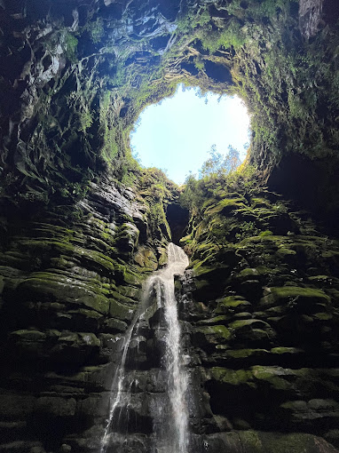
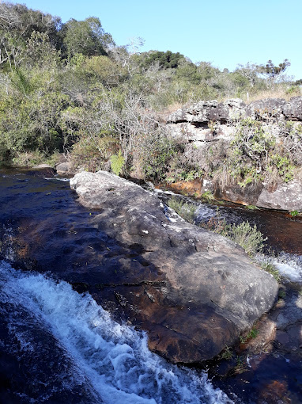
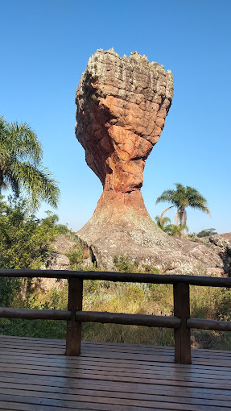

Bem-vindo a EuroTour
Buraco do Padre
A Furna do Buraco do Padre é um dos mais belos atrativos naturais dos Campos Gerais, no estado do Paraná, Sul do Brasil. Está localizada dentro do Parque Nacional dos Campos Gerais, na borda leste da Bacia do Paraná, a aproximadamente 24 km a leste/sudeste da cidade de Ponta Grossa, distrito de Itaiacoca.
Cachoeira da Mariquinha
A Cachoeira da Mariqunha é uma queda-d'água localizada nas proximidades de Ponta Grossa, no estado brasileiro do Paraná. Com 30 metros de altura, é uma unidade de conservação do município e considerada uma das atrações turísticas da cidade.
Parque Estadual Vila Velha
O Parque Estadual de Vila Velha é um sítio geológico situado no município brasileiro de Ponta Grossa, do qual é a principal atração turística. Está localizado a vinte quilômetros ao sudeste do centro da cidade e a cem quilômetros de Curitiba, capital do estado do Paraná.
